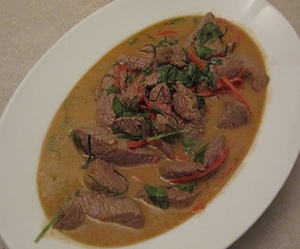

Rindshuft an Dominiques Curry
5,5 von 6Currypaste kurz andämpfen, mit etwas Kokosmilch ablöschen. Mit Fischsauce sowie etwas Zucker abschmecken, falls nötig etwas Wasser beigeben. In einer sparaten Pfanne die Rindshuftstücke mit Chilistreifen scharf anbraten und zur Sauce geben. Kaffir-Limettenblätter in feinste Streifen schneiden und vor dem servieren darüber geben.
